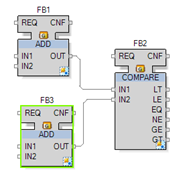
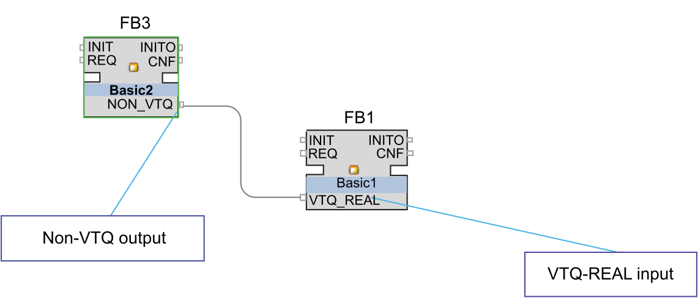
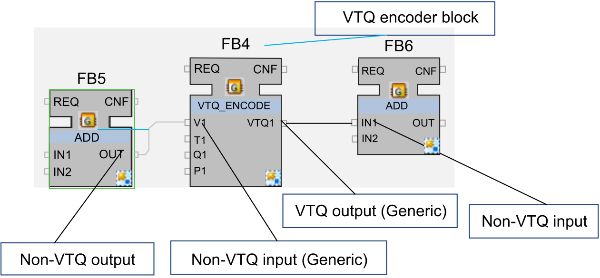

The implicit conversions of VTQ and non-VTQ data types is as follows:
|
Source Data Type |
Converted Data Type |
Rule |
|---|---|---|
|
non-VTQ Data Type |
non-VTQ Data Type |
No change from current behavior.
NOTE: Implicit data type conversion between non-VTQ types is supported (between compatible types).
|
|
VTQ Data Type |
VTQ Data Type |
The structured VTQ value is passed. NOTE: Implicit data type conversion between VTQ types is supported (between compatible types). |
|
non-VTQ Data Type |
VTQ Data Type |
Implicit type conversion from non-VTQ data type to VTQ data type. An initial value on the function block type input can be created to define default values. The V value is taken from the connection and Q and T from initial values.
NOTE: the default values for Q and T are:
|
|
VTQ Data Type |
non-VTQ Data Type |
The Q and T are stripped and only the value (V) is transferred. Standard implicit data type conversion is supported. |
Examples:
Non-VTQ to non-VTQ (similar to VTQ to VTQ):

Non-VTQ to VTQ (automatic type conversion):

Non-VTQ to VTQ (using an Encoder function block - not required) to non-VTQ:
